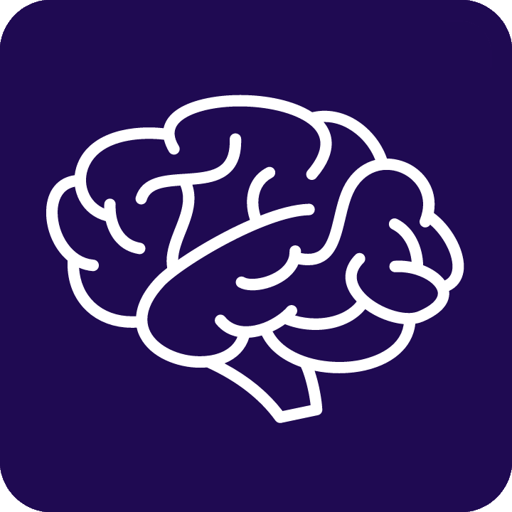

Healthy Mind

Em uma manhã de primavera ensolarada, Otávio Calazans caminhava pelo parque, refletindo sobre sua
carreira e paixão por ajudar os outros a alcançar seu potencial máximo. Otávio era uma psicóloga
dedicada, com
anos de experiência em aconselhamento e terapia. No entanto, ela sentia que poderia fazer mais,
impactar mais vidas de uma forma significativa.
Enquanto observava as pessoas ao redor, Otávio percebeu uma necessidade crescente por serviços de
consultoria que abordassem não apenas problemas mentais, mas também promovessem o bem-estar holístico.
Foi ali, sentada em um banco do parque, que a ideia da Healthy Mind começou a ganhar forma.
Otávio começou a planejar sua empresa de consultoria, determinada a criar um espaço onde indivíduos e
organizações pudessem encontrar suporte para desenvolver mentes saudáveis. Ela queria oferecer mais do
que terapia tradicional; ela imaginava uma abordagem holística que incorporasse orientação pessoal,
treinamento de habilidades e desenvolvimento de mentalidade positiva.
Com determinação e entusiasmo, Otávio reuniu uma equipe diversificada de profissionais talentosos:
psicólogos, coaches de vida, nutricionistas e especialistas em bem-estar. Juntos, eles compartilhavam
a visão de promover a saúde mental e emocional em sua comunidade.
Depois de meses de planejamento e preparação, a Healthy Mind foi oficialmente lançada. Localizada em
um espaço acolhedor no centro da cidade, a empresa oferecia uma variedade de serviços personalizados.
Eles ofereciam consultas individuais, workshops em grupo e programas corporativos, adaptados às
necessidades específicas de cada cliente.
A reputação da Healthy Mind cresceu rapidamente à medida que seus clientes experimentavam
transformações positivas em suas vidas. Pessoas encontravam soluções para gerenciar o estresse,
melhorar relacionamentos e alcançar objetivos pessoais e profissionais. Empresas perceberam uma
melhoria no bem-estar de seus funcionários e na produtividade geral.
Com o tempo, Otávio expandiu a Healthy Mind para oferecer recursos online, incluindo webinars e conteúdo
educacional. Isso permitiu que sua mensagem de saúde mental positiva alcançasse um público ainda mais
amplo. Hoje, a Healthy Mind continua a prosperar como um farol de esperança e orientação para aqueles
que buscam uma vida equilibrada e saudável. Otávio e sua equipe estão dedicadas a continuar sua missão de
promover mentes saudáveis, um passo de cada vez.